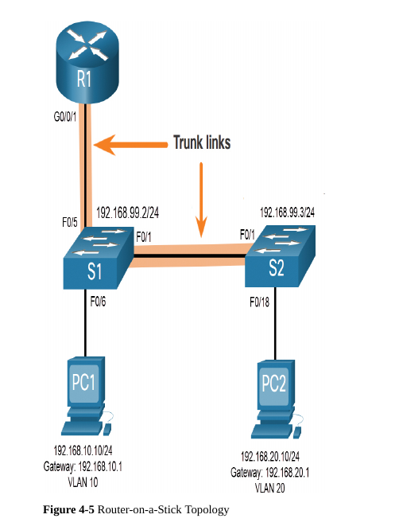

Inter-VLAN Routing
Table of Contents
1. Inter-VLAN Routing
1.1. Inter-VLAN Routing Operation
1.1.1. What is inter-VLAN Routing?
Is the process of forwarding network traffic from one VLAN to another VLAN
Three types of inter-VLAN routing options
- Legacy Inter-VLAN routing
- this is a legacy solution, it does not scale well
- Router-on-a-stick
- this is an acceptable solution for small- to medium-sized network
- layer 3 switch using switched virtual interfaces (SVIs)
- this is the most scalable solution for medium to large organizations
1.1.2. Legacy Inter-VLAN Routing
Relied on using a routing with multiple Ethernet interfaces. Each router interface was connected to a switch port in different VLANs. The router served as the default gateways to the local hosts on the VLAN subnet.
NOTE: Legacy Inter-VLAN routing is no longer implemented in switched networks.
1.1.3. Router-on-a-Stick Inter-VLAN Routing
Overcomes the limitationof the legacy inter-VLAN routing as it only requires one physical ethernet interface to route traffic between multiple VLANs on a network.
Subinterfaces are used to configure the router interface to identify routable VLANs.
NOTE: router-on-a-stick method of inter-VLAN does now scale beyond 50 VLANs
1.1.4. Inter VLAN Routing on a Layer 3 Switch
The modern method of performing inter-VLAN routing is to use a Layer 3 swiitch and switched virtual interfaces (SVI).
Layer 3 switch
- is also known as MLS (Multilayer switch) because it operates at layer 2 and layer 3.
1.2. Router-on-a-stick Inter-VLAN Routing
1.2.1. VLAN and Trunking Configuration

- Step 1: create and name VLANs
S1(config)# vlan 10 S1(config-vlan)# name LAN10 S1(config-vlan)# exit S1(config)# vlan 20 S1(config-vlan)# name LAN20 S1(config-vlan)# exit S1(config)# vlan 99 S1(config-vlan)# name Management S1(config-vlan)# exit S1(config)#
- Step 2: create the management interface
S1(config)# interface vlan 99 S1(config-if)# ip add 192.168.99.2 255.255.255.0 S1(config-if)# no shut S1(config-if)# exit S1(config)# ip default-gateway 192.168.99.1 S1(config)#
- Step 3: configure access ports
S1(config)# interface fa0/6 S1(config-if)# switchport mode access S1(config-if)# switchport access vlan 10 S1(config-if)# no shut S1(config-if)# exit S1(config)#
- Step 4: configure trunking ports
S1(config)# interface fa0/1 S1(config-if)# switchport mode trunk S1(config-if)# no shut S1(config-if)# exit S1(config)# interface fa0/5 S1(config-if)# switchport mode trunk S1(config-if)# no shut S1(config-if)# end *Mar 1 00:23:43.093: %LINEPROTO-5-UPDOWN: Line protocol on Interface FastEthernet0/1, changed state to up *Mar 1 00:23:44.511: %LINEPROTO-5-UPDOWN: Line protocol on Interface FastEthernet0/5, changed state to up
1.2.2. Subinterface configuration
interface interface_is.subinterface global configuration mode
command to create sub interfaces. Each subinterface should also be
configured with the following commands
encapsulation dot1q vlan_id [native]
- to configure the subinterface to respond to 802.1Q encapsulated traffic from the specified VLAN ID. The native keyword is optional, to set the native VLAN to something other than the VLAN 1
ip address ip-address subnet-mask
- to configure the IPv4 address of the subinterface. This address typically serves as the default gateway for the identified VLAN
After entering the said commands, enable (no shutdown) the main
interface of the subinterfaces.
R1(config)# interface G0/0/1.10 R1(config-subif)# description Default Gateway for VLAN 10 R1(config-subif)# encapsulation dot1Q 10 R1(config-subif)# ip add 192.168.10.1 255.255.255.0 R1(config-subif)# exit R1(config)# R1(config)# interface G0/0/1.20 R1(config-subif)# description Default Gateway for VLAN 20 R1(config-subif)# encapsulation dot1Q 20 R1(config-subif)# ip add 192.168.20.1 255.255.255.0 R1(config-subif)# exit R1(config)# R1(config)# interface G0/0/1.99 R1(config-subif)# description Default Gateway for VLAN 99 R1(config-subif)# encapsulation dot1Q 99 R1(config-subif)# ip add 192.168.99.1 255.255.255.0 R1(config-subif)# exit R1(config)# R1(config)# interface G0/0/1 R1(config-if)# description Trunk link to S1 R1(config-if)# no shut R1(config-if)# end R1#
1.2.3. Router-on-a-stick inter-VLAN routing verification
show ip route show ip interface brief show interfaces show interfaces trunk
1.3. Inter-VLAN Routing Using Layer 3 Switches
1.3.1. Layer 3 switch inter-VLAN routing
Capabilities of a Layer 3 switch include the ability to do the following:
- Route from one VLAN to another using multiple switched virtual interfaces (SVIs).
- Convert a Layer 2 switchport to a Layer 3 interface (that is, a
routed port). A
routed portis similar to a physical interface on a Cisco IOS router.
1.3.2. Layer 3 switch configuration
- Step 1: VLAN creation
D1(config)# vlan 10 D1(config-vlan)# name LAN10 D1(config-vlan)# vlan 20 D1(config-vlan)# name LAN20 D1(config-vlan)# exit D1(config)#
- Step 2: create the SVI VLAN interfaces
D1(config)# interface vlan 10 D1(config-if)# description Default Gateway SVI for 192.168.10.0/24 D1(config-if)# ip add 192.168.10.1 255.255.255.0 D1(config-if)# no shut D1(config-if)# exit D1(config)# D1(config)# int vlan 20 D1(config-if)# description Default Gateway SVI for 192.168.20.0/24 D1(config-if)# ip add 192.168.20.1 255.255.255.0 D1(config-if)# no shut D1(config-if)# exit D1(config)#
- Step 3: configure access ports
D1(config)# interface GigabitEthernet1/0/6 D1(config-if)# description Access port to PC1 D1(config-if)# switchport mode access D1(config-if)# switchport access vlan 10 D1(config-if)# exit D1(config)# D1(config)# interface GigabitEthernet1/0/18 D1(config-if)# description Access port to PC2 D1(config-if)# switchport mode access D1(config-if)# switchport access vlan 20 D1(config-if)# exit
- Step 4: enable IP routing
D1(config)# ip routing
1.3.3. Routing on a Layer 3 Switch
use the no switchport interface configuration mode command to make a
switchport into a layer 3 interface.
1.3.4. Troubleshoot Inter-VLAN routing
2. Class Notes: Inter VLAN
one practice packet tracer skills: ssh, vlan, inter-vlan
2.1. INTER-VLAN ROUTING OPERATION
2.1.1. VLAN GOAL
- to limit broadcast domain
- but; they must still be able to communicate
2.1.2. communications with default router
- a default gateway is required
2.1.3. Inter vlan routing
- process of forwarding network traffic from one VLAN to another VLAN
- types:
- legacy inter-VLAN routing
- router-on-a-stick
- small to medium sized
- Layer 3 switch using (SVI)
- most scalable solution
2.1.4. legacy Inter vlan
- problem is its using physical ports to assign VLANS (not efficient)
2.1.5. Router-on-a-stick
- not scalable beyond 50 vlans
- uses sub-interfaces on one interface (g0/0.10, g0/0.20)
2.1.6. Inter-VLAN routing on a layer 3 switch
- modern method
- the default gateway here that will be set wil be the default gateway
- uses a layer 3 switch (multi layer switch [mls])
2.1.7. router on a stick
- steps:
- create and name the VLAN
- create the management interface (create SVI)
- configure access ports (set ports to vlan)
- configure trunking (switchport)
- configure subinterface

2.2. Inter-VLAN Routing using Layer 3 switch
- create vlans and name
- create the SVI interfaces
- configure acces ports
- enable ip routing in the MLS (multilayer switch)
(config)# ip routing